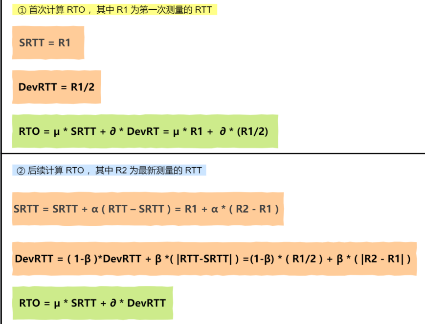
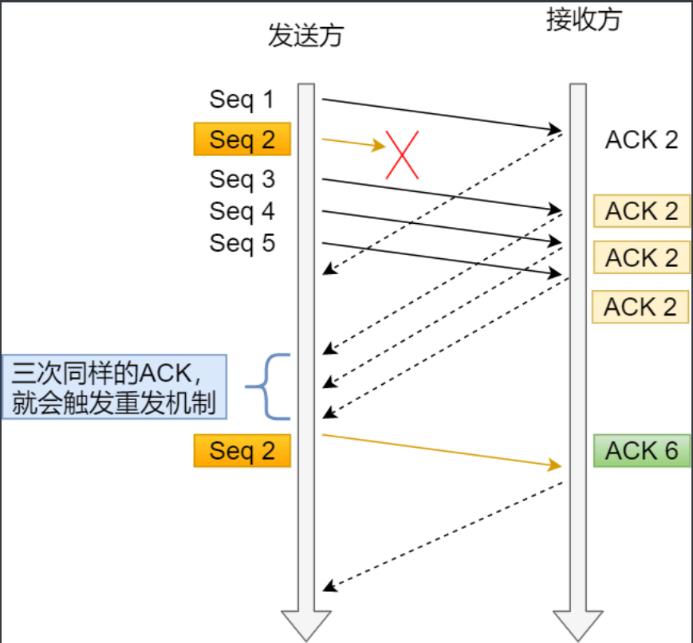
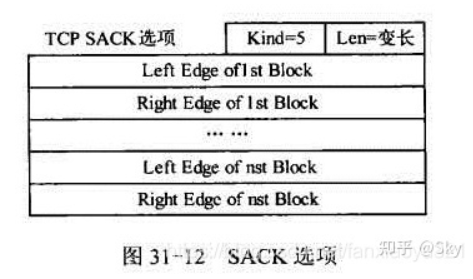
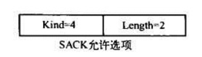
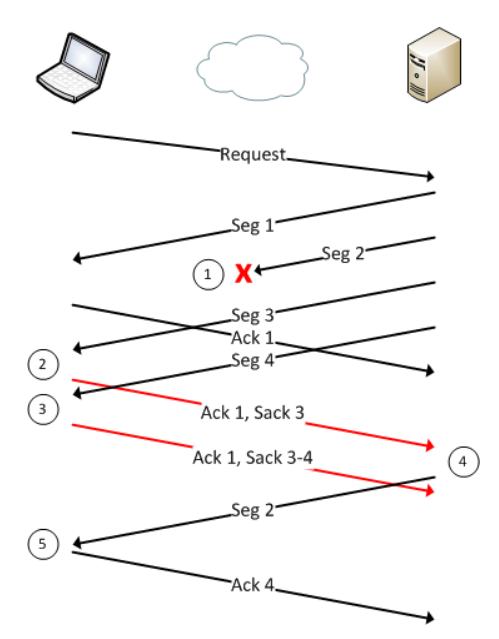
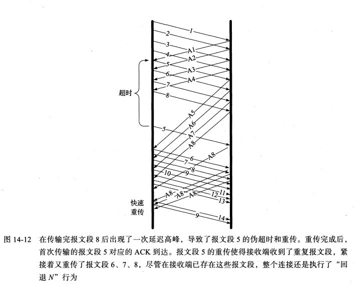

[TCP/IP详解]:TCP超时与重传
TCP协议提供可靠数据传输服务，为了保证数据的正确性，发送端会重传它认为已经丢失的包
TCP协议当中，总共有4种重传方式：超时重传,快速重传，SACK,D-SACK
1. 超时重传
TCP在包含数据(SYN或FIN被置位)的报文段被发出的时候会设置一个计时器(timer), 如果计时器直到超时都没有收到该报文段的ACK, 那么就会触发超时重传机制
一些变量
RFC[1122]规定了一些关于超时重传的变量
R1
R1表示TCP在向IP层传递消极建议(如重新判断当前的IP路径)时，至少需要重传的次数
Linux当中，该值记录在
/proc/sys/net/ipv4/tcp_retries1下，默认是3次R2
R2表示当重传多少次时，TCP应该放弃当前的连接
Linux当中，该值记录在
/proc/sys/net/ipv4/tcp_retries2下，默认是15次
上面的变量都与携带数据的报文段相关，而SYN报文段则与另外一些文件有关
/proc/sys/net/ipv4/tcp_syn_retries：重传SYN报文段的最大次数/proc/sys/net/ipv4/tcp_synack_retries: 重传[SYN ACK]报文段的最大次数
RTO
先来介绍一下一些术语:
RTO: (Retransmission Timeout, 重传超时时间)
计数器的超时时间会被设为该值
SRTT:(smoothed RTT, 平滑的RTT)
用于估计RTT
DevRTT:(平滑的RTT与 最新 RTT 的差值)
超时重传中最关键的部分便在于RTO的求解
- 当RTO远大于RTT时，连接的吞吐量会大幅下降
- 当RTO小于RTT时，会在网络中引入不必要的重复数据
因此，RTO应该略大于RTT, RTT则与网络当前拥塞状况有关，因此是一个即时量
RTO求解的标准方法记录在RFC[6298]当中
标准RTO求解

在Linux当中，这些系数为: α = 0.125，β = 0.25， μ = 1，∂ = 4,是模拟后得出的结果
重传二义性与Karn算法
重传二义性
假设一个数据报的传输超时，那么该数据报会被重传，可如果接下来收到一个ACK, 那么无法确定该ACK是第一次还是第二次传输的响应, 这就是重传二义性
二进制指数退避
在TCP计算RTO时，会采取一个退避系数(backoff factor), 初始时该值为1， 后面每当重传计时器超时时，该系数就会加倍
设初始RTO为
R, 当前退避系数为k, 那么当前计时器的超时时间R会被更新为**R * k **如果计时器收到了对应的ACK, 且该ACK不具有重传二义性，那么
k就会被重置为1Karn算法
Karn算法就是基于上面的理论，且当今的超时重传的标准计算方法就是基于karn算法
当接收到重复传输数据的ACK时，不进行该数据报的RTT测量，以避免重传二义性问题
之后，对该数据报采取退避策略，仅当接收到未经重传的数据时，该SRTT才用于计算RTO
2. 快速重传
快速重传基于接收端的反馈来引发重传，而不是重传计时器的超时
重复ACK
当接收端接收到失序报文段时，TCP需要立即生成ACK, 该ACK应该和上一次发送的ACK一样，被称为重复ACK
之所以要立即生成，是因为需要发送端尽早的值失序报文段，并告诉其空缺在哪
快速重传
TCP发送端在接收到至少**dupthresh(ACK阙值)**个重复ACK之后，即重传可能丢失的数据分组，而不必等到重传计时器超时
图例

该图中将
dupthresh设置为3, 此时第四次接收到重复ACK之后，就会触发快速重传，此时发送端重传可能的丢失分组，这里是Seq2恢复点
将发送端在执行重传之前发送的最大序列号称为恢复点，上图中是Seq5, 仅当发送方收到大于恢复点的ACK之后，才会从恢复阶段结束，否则持续发送可能丢失的报文段
问题
快速重传有一个没有解决的问题就是，到底应该重传多少个包, 如果没有使用SACK的话，默认应该就是从接收到的ACK号开始向后所有的包(即图中的2—5), 即回退N步
这样会造成很多不必要的重复重传
3. SACK
在快速重传当中，可能会导致很多不必要的重传，通过使用SACK， 可以进行优化
SACK选项
SACK是一个TCP报文头的选项，总共包含(8n + 2)个字节
- 接收方已经成功接受报文段的序列号范围，是一个数值对{start, end}, 占8n个字节
- 选项种类和长度，占2个字节

SACK允许选项
当接收方收到SACK允许选项后，就可以生成SACK
SACK只包含2个字节

由于TCP报文头选项部分最多只有40个字节，因此最多只能包含4个数据块，又通常SACK选项会与TSOPT选项(10字节)一同使用
因此通常一个ACK只会包含3个块
SACK接收端行为
注：包含一个或多个SACK块的ACK有时简单称为SACK
当接收端接收到SACK允许选项之后就生成SACK了
假设SACK中包含3个块，那么其第一个块包含的是最近接收到的报文段的序列号范围，第二，三个块是倒数第二，三个接收到的报文段的序列号范围
注: 这样做意味着不同SACK中的块可能会有重叠，目的是为了进行备份，因为SACK可能会丢失，并且如果其SYN字段没有置位的话
也不会被重传
SACK发送端行为
发送方根据接收到的SACK以及收到的重复ACK, 可以推断出空缺的范围，因此可以精确的重传那些空缺报文段，这种重传操作也被称为选择重传
重传缓存
在发送方中有一个重传缓存，用于缓存那些已经重传的报文段，当其接收到缓存中指定序列范围的普通ACK时，就将重传缓存中的指定报文段标记为重传成功
注: 发送端同样记录了接收到的SACK信息，不过书上没有指明
食言
RFC[2018]中还记录了接收方的食言特性，即接收方可能会在发送SACK指定某个范围的数据已经接受成功之后，又将这些乱序数据从缓冲区中清空，前提是接收方缓冲区快被耗尽了， 不过不建议这种行为
食言特性会带来一些影响:
SACK发送端不能够在收到一个SACK之后就将其重传缓存中的数据清空
只有当收到普通ACK的ACK号大于其最大序列号时才可以
重传计时器应该忽略SACK

4. DSACK
先来介绍一下伪超时与伪重传
伪超时
过早判定超时，即RTO < RTT
伪重传
由伪超时导致的重传行为

伪超时可能会导致快速重传
DSACK
DASCK(Duplicated SACK, 重复SACK), 这个机制是在 SACK 的基础上，额外携带信息，告知发送方有哪些数据包自己重复接收了
书上没有细说，留坑
本博客所有文章除特别声明外，均采用 CC BY-SA 4.0 协议 ，转载请注明出处！